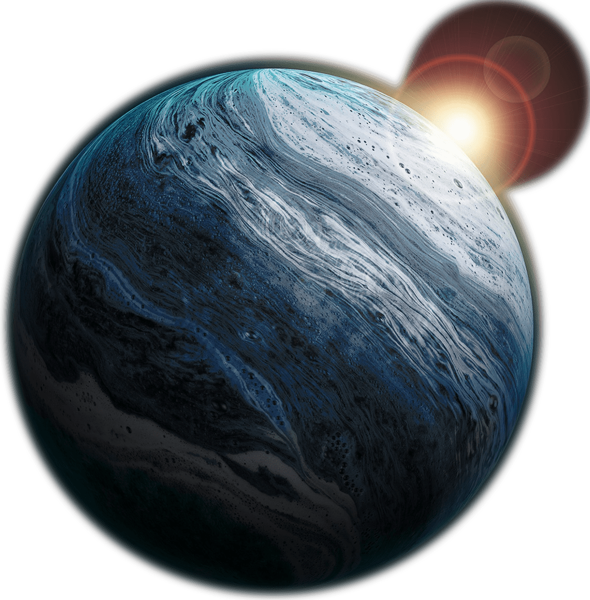
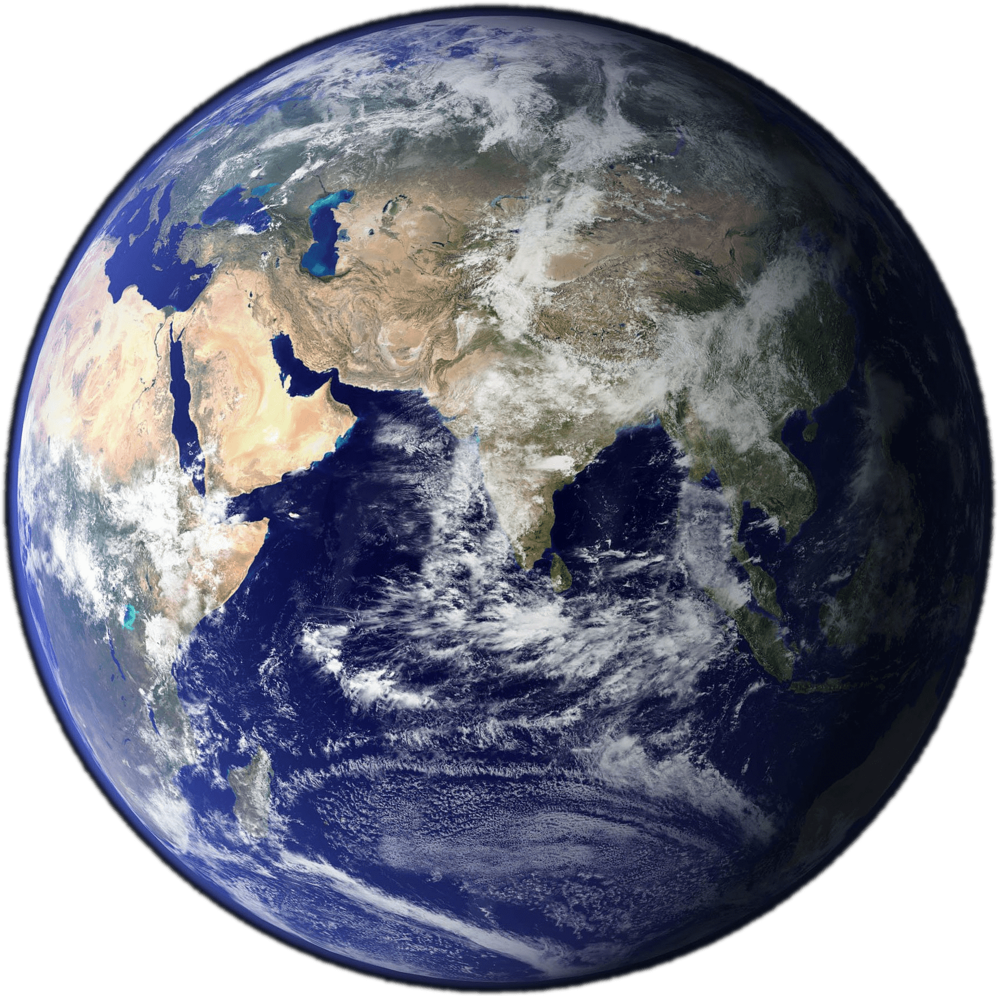
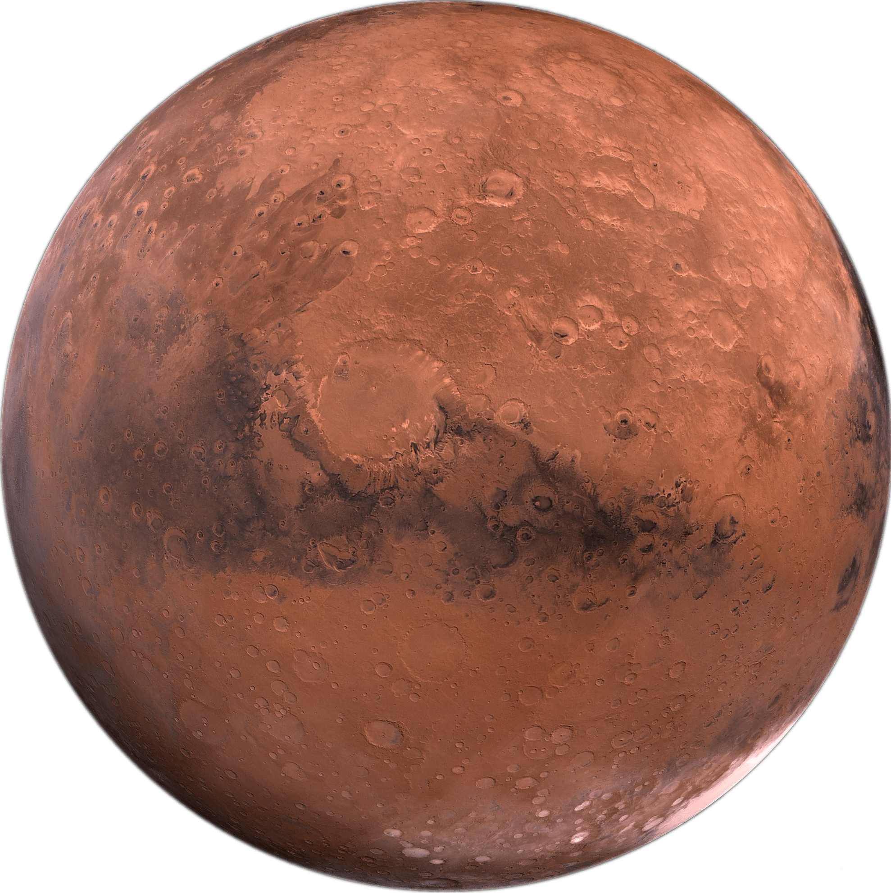
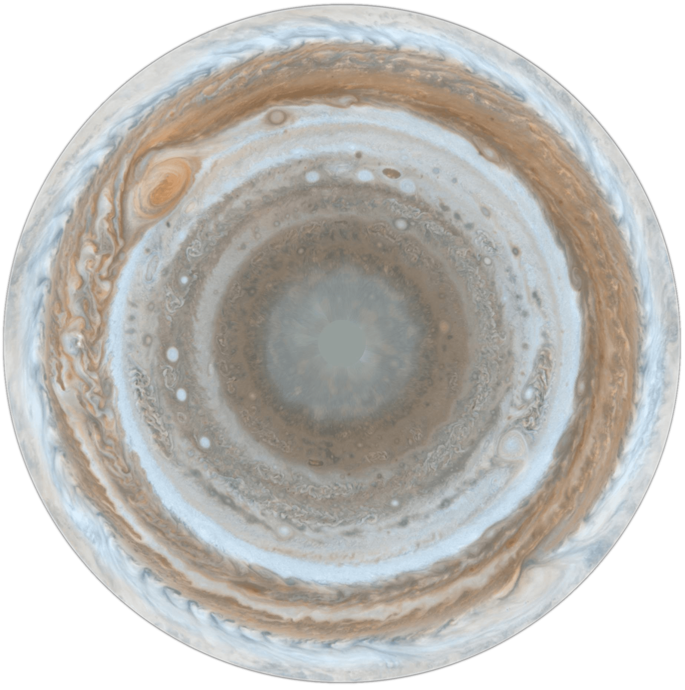
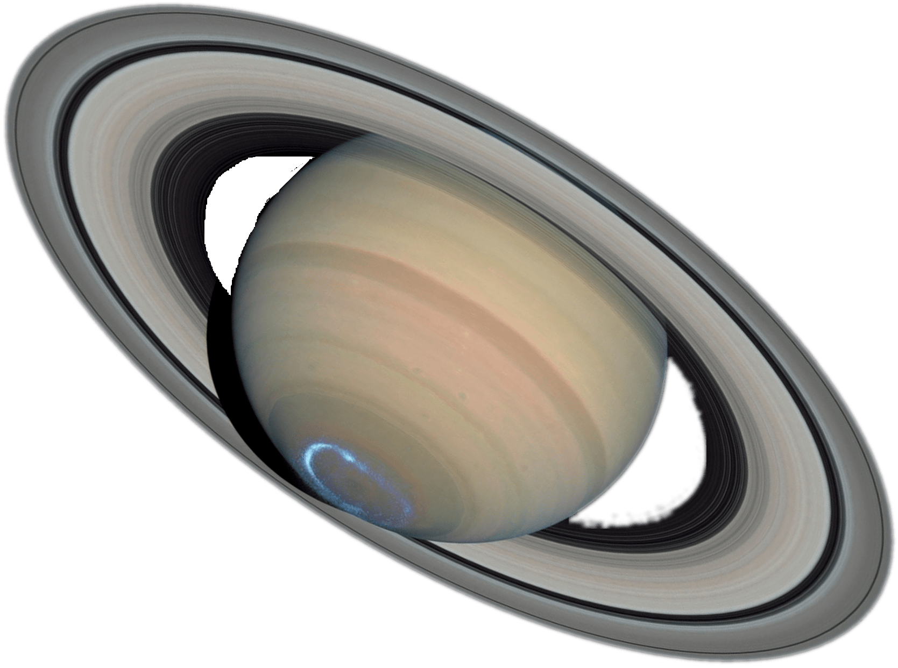
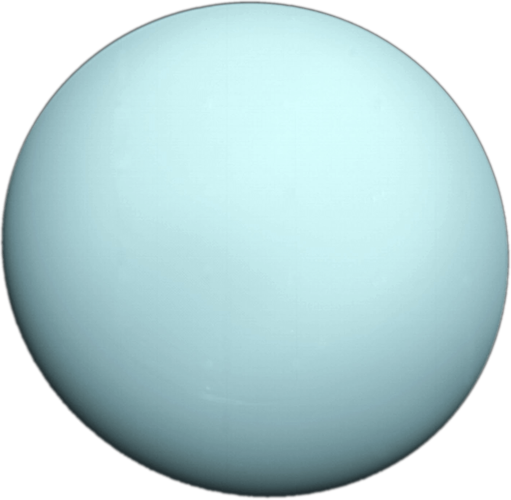
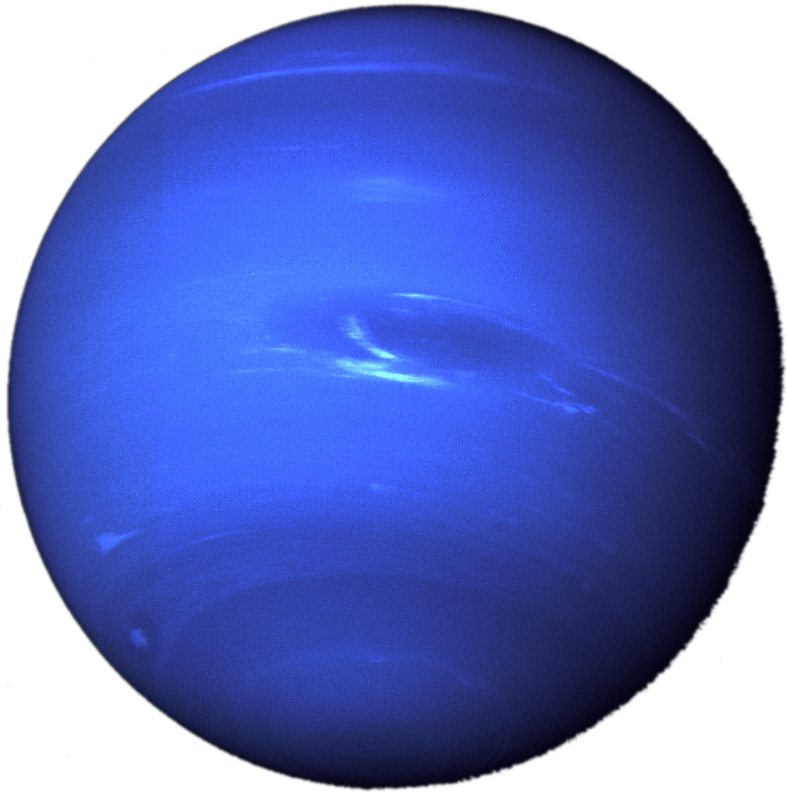
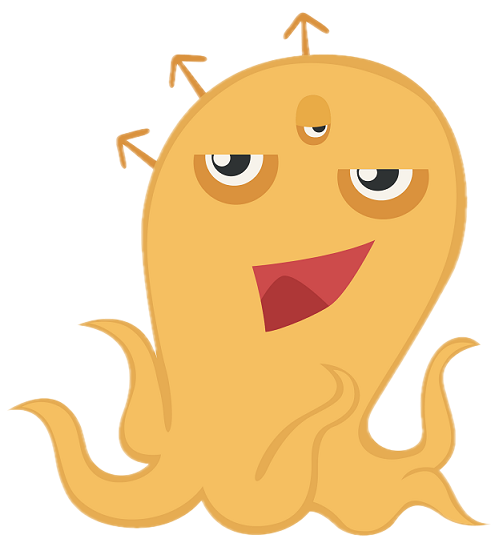

Let us learn about the solar system family!
Hello kid ! Nice to meet you! I am Alex the Alien,
Your browser does not support the audio tag.
We will Start on the Sun !
kid ! The Sun is a Giant Star that makes life possible!

Your browser does not support the audio tag.
Kid , we are currently on Mercury !
Sun !
Mercury is known for its many giant craters that cover the planets.
Your browser does not support the audio tag.
This is Venus , the Second Planet from the Sun !
Venus is known for being similar to the Earth in size and mass!
Kid , if you want to see a planet in the night sky,
Venus is the brightest of them all from Earth!

Your browser does not support the audio tag.
Well my Earthlings, kid ! You are now currently on your home planet, Earth !
Sun and the only known planet to support life!

Your browser does not support the audio tag.
Look kid ! Now we are on Mars !
Mars is the fourth planet from the Sun !
Earth !

Your browser does not support the audio tag.
Welcome to Jupiter , kid !
Jupiter is the fifth planet from the Sun !

Your browser does not support the audio tag.
Look kid ! Now we have landed ourselves on Saturn !
Saturn is the sixth planet from the Sun !

Your browser does not support the audio tag.
Look out our Window kid !
Uranus ! Uranus is the seventh planet from the Sun .
Uranus is unique because it spins on its side!

Your browser does not support the audio tag.
Finally we have Neptune , kid !
Sun .
Neptune is famous for its extremely strong winds that are stronger than any other place in the solar system!

Your browser does not support the audio tag.
Kid !
Press me I will send you back using my super power!